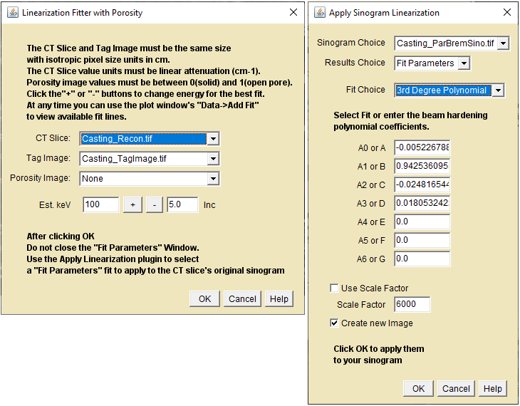
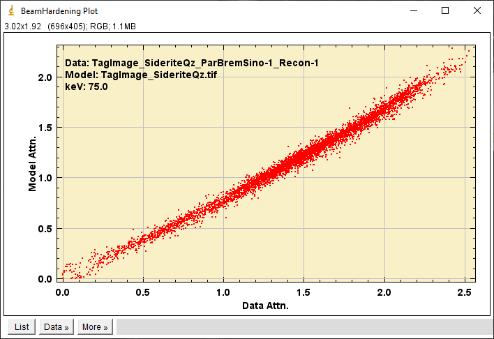
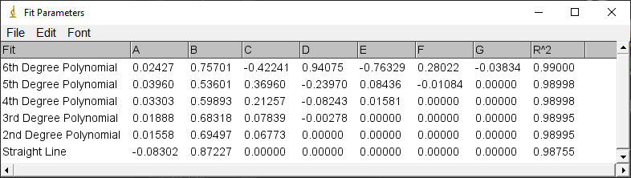

A pair of plugins for correction of beam hardening
artifacts in reconstructed CT slices using a model-based linearization.
See the
Linearization
Tutorial
page for a brief description of the process.
See the
Material Tagger
page for creating Tag Images.
See the Linearization Example page for examples of linearization using CT_Recon slider and the
Linearization Fitter.

Linearize Fitter (left) and Apply (right)
Step 1. Linearization Fitter(left)
CT Slice - select the beam-hardened slice to be corrected.
Tag Image - Select the Tag Image model for correcting the CT slice.
Porosity Image - Weights the model image attenuations with the volume fraction of material in each pixel. Porosity images must have values between 0(solid) and 1(open pore).
Est. keV - Click the +/- buttons or enter an estimate of the effective X-ray energy to interactively display a plot of the Slice vs Model attenuations and polynomial fits.
Inc - The increment for the +/- buttons.
Adjust the Est.keV to optimize R^2 of the fit. Click
OK when done. Do not delete the Fit Parameters window.

Linearize Fit Plot

Linearize Fits
Step 2. Apply Linearization(right)
Sinogram Choice - select the sinogram used to reconstruct the
beam-hardened slice.
Results Choice - Select the Fit Parameters Results window.
Fit Choice - Select the polynomial to apply to the sinogram. The fit coefficients will be imported from the Fit Parameters window.
A0 to A6 - Edit the polynomial coefficients if needed.
Use Scale Factor - Check this box if your sinogram has been
scaled from 32 to 16bit
Scale Factor - Enter the factor used to scale the sinogram.
Ignored if Use is not checked.
Create new image -recommended, otherwise the original sinogram
will be overwritten..
Click OK to apply the correction to the sinogram. Reconstruct and
observe the result. Check the consistency of the reconstructed
attenuations using the
Xray Lookup MuLin
and
Xray Lookup Ratio
plugins. The X-ray energies reported from the corrected attenuations
should be approximately the same. Remember that the correction
polynomial is a "fit" to the observed data. If there is a lot of scatter
around the fit then the corrected attenuations will be less accurate.